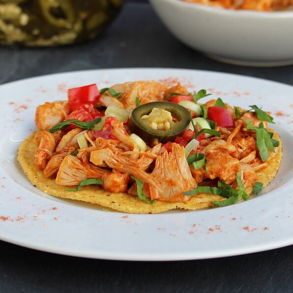

Vegan Jackfruit Tacos

Description
Jackfruit is a great vegan alternative to shredded chicken to use in tacos. These jackfruit tacos are delicious and vegan! Choose your favorite taco toppings, such as lettuce, tomato, cilantro, avocado, vegan cheese, and vegan sour cream.
Ingredients
- 2 (20 ounce) cans jackfruit in brine - drained, rinsed, and cut into bite-sized pieces
- 1 tablespoon vegetable oil
- 1 tablespoon water, or more as needed
- 2 tablespoons taco seasoning mix, or to taste
- 4 taco shells
- ½ cup salsa, or to taste
Steps
- Heat oil in a small saucepan over medium heat. Add jackfruit; cook and stir for 2 to 3 minutes. Add 1 tablespoon water and taco seasoning; stir until well combined, about 1 minute. Add additional water 1 tablespoon at a time as needed.
- Place a small amount of jackfruit in each taco shell; add 2 tablespoons salsa.